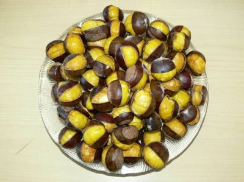

封开油栗封开油栗历史悠久,由于生食清甜爽脆,熟食甘香可口,在省内外享誉盛名,1988年被评为“广东省优稀水果品种。
封开油栗主产于长岗镇,覆盖罗董、杏花、渔涝、河儿口、七星、江口、大洲等八个镇。
封开油栗是中国板栗中最优良的品种之一，因其源于皮薄油亮、脆甜口香而得名，是封开一个著名的优良干果特产。
2006年“封开油栗”产品被国家认定为绿色食品；同年8月被中国流通协会认定为“中华名果”称号。2007年，
封开县成为“中国油栗之乡”。封开油栗历史悠久，由于生食清甜爽脆，熟食甘香可口，在省内外享誉盛名，
1988年被评为“广东省优稀水果品种”，主产于长岗镇，覆盖罗董、杏花、渔涝、河儿口、七星、江口、大洲等八个镇。